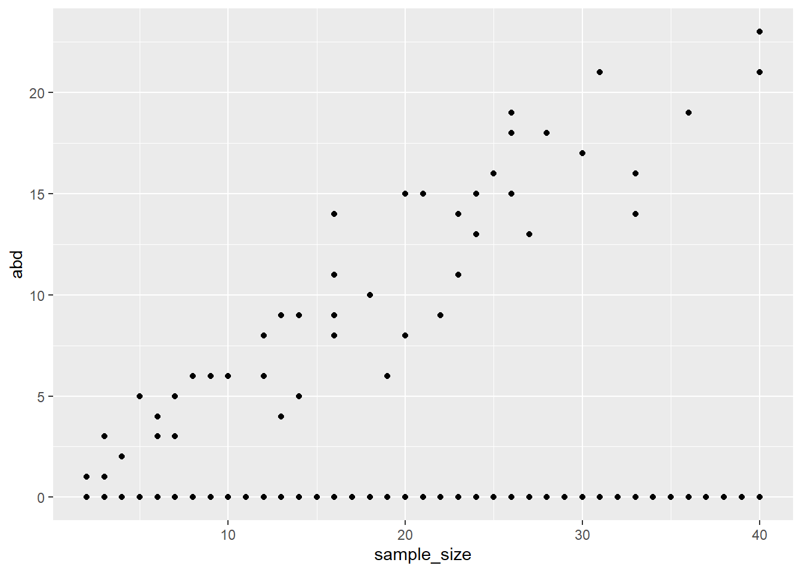
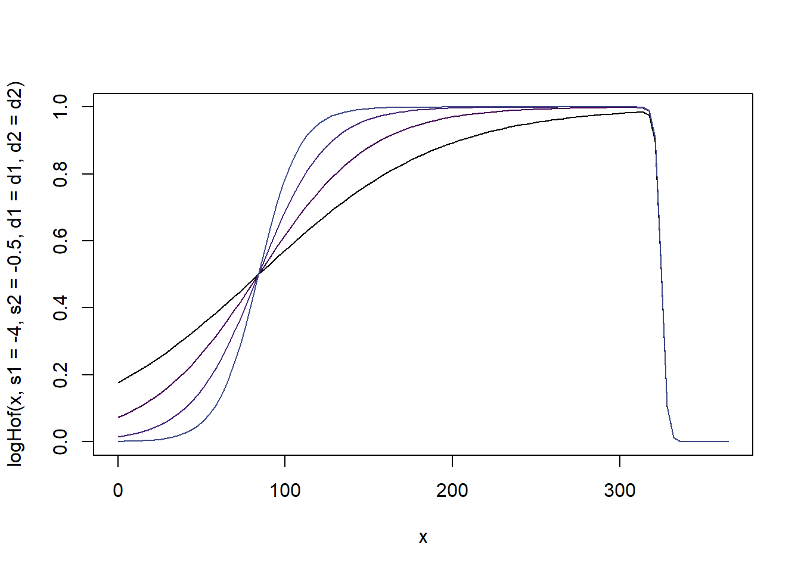
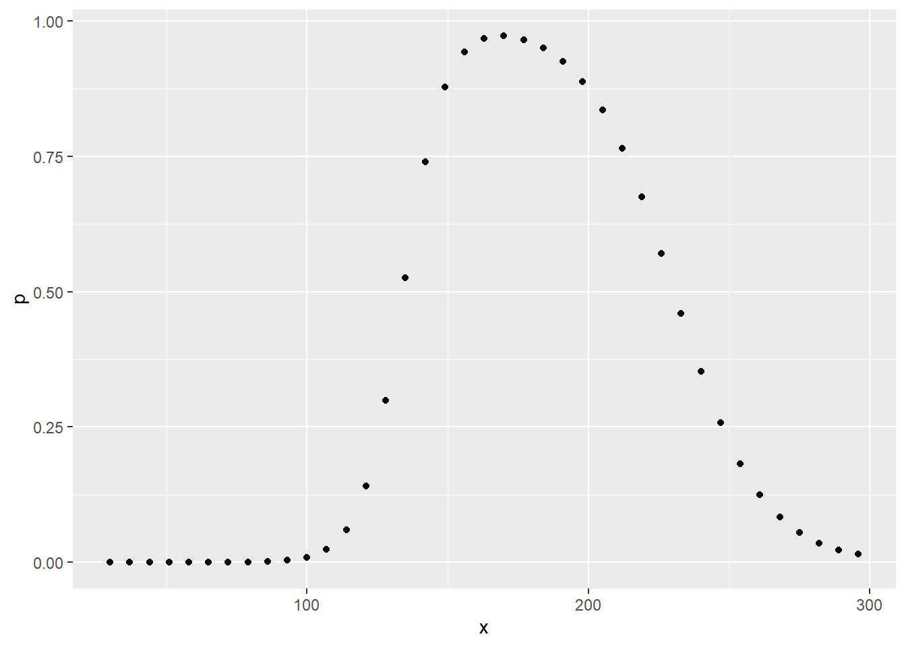

library(targets)
library(ggplot2)
library(tidyverse)
library(tidybayes)
library(cmdstanr)Occupancy models
Occupancy models are a huge area of applied statistics in ecology. They are particular flavours of logistic regression where we model two probabilities at once: the probability an animal occupies a site, and the probability it is detected if it is there.
\[ \begin{align} Pr(y = 1) &= \text{Bernoulli}(wp) \\ w &= 1 - (1 - d)^{\text{effort}} \\ \text{logit}(p) &= \alpha \\ \text{logit}(d) &= \beta \\ \alpha &\sim \text{N}(-1,0.5) \\ \beta &\sim \text{N}(0,0.5) \\ \end{align} \]
\[ \begin{align} Pr(y = 0) &= (1 - d) ^ {\text{effort}}p + 1 - p \\ {logit}(p) &= \alpha \end{align} \]
Here is a very simple occupancy model that controls for effort:
curve(1 - (1 - .4)^x, xlim = c(0, 20))
abline(v = 1, h = .4)This can also be done with the cloglog link, which is available in glm, lmer and friends using family = binomial(link = 'cloglog'). This lets you put effort in as an offset using offset(log(effort))
fake_data <- tibble(
sample_id = 1:200,
real_pres = rbinom(n = length(sample_id),
p = .2,
size = 1),
sample_size = round(
runif(
n = length(sample_id),
min = 2, max = 40)
)) |>
rowwise() |>
mutate(pa =
if_else(real_pres == 1,
true = list(rbinom(n = sample_size,
p = .6,
size = 1)),
false = list(0)),
abd = sum(pa))
ggplot(fake_data, aes(x = sample_size, y = abd)) +
geom_point()
fake_data# A tibble: 200 × 5
# Rowwise:
sample_id real_pres sample_size pa abd
<int> <int> <dbl> <list> <dbl>
1 1 0 34 <dbl [1]> 0
2 2 0 12 <dbl [1]> 0
3 3 0 11 <dbl [1]> 0
4 4 0 21 <dbl [1]> 0
5 5 0 8 <dbl [1]> 0
6 6 0 18 <dbl [1]> 0
7 7 0 28 <dbl [1]> 0
8 8 0 22 <dbl [1]> 0
9 9 1 3 <int [3]> 3
10 10 0 26 <dbl [1]> 0
# … with 190 more rowsfake_data |>
mutate(prop = abd/sample_size) |>
pull(prop) |> mean()[1] 0.142147plot pres / absence
fake_detections <- fake_data |>
mutate(at_least_one_detect = as.numeric(abd>0))
fake_detections |>
ggplot(aes(x = sample_size, y = at_least_one_detect)) +
geom_point()validate a simple Stan model
library(cmdstanr)
simple_occ_logit <- cmdstan_model(
stan_file = here::here(
"posts/2023-02-08-occupancy-in-time/simple_occ_logit.stan"))data_list <- list(N = nrow(fake_detections),
y = fake_detections$at_least_one_detect,
sample_size = fake_detections$sample_size)
data_list$N
[1] 200
$y
[1] 0 0 0 0 0 0 0 0 1 0 0 1 0 0 0 0 0 0 0 0 1 1 0 0 1 0 0 0 0 0 0 0 0 1 1 0 0
[38] 1 1 0 0 0 0 1 0 0 0 0 0 0 0 0 1 0 1 0 0 0 0 0 0 1 0 1 0 0 0 0 0 0 0 0 1 0
[75] 1 0 0 1 0 0 0 1 0 1 0 1 0 0 1 0 0 0 0 0 0 0 1 0 1 0 0 0 0 1 0 0 1 0 1 0 0
[112] 0 0 0 0 0 0 0 0 0 1 0 1 0 0 1 0 1 0 0 0 0 0 0 0 1 0 1 0 0 0 1 0 0 1 1 0 0
[149] 0 0 0 0 0 0 0 1 1 0 1 0 1 0 0 0 0 0 1 0 0 0 1 0 0 0 0 0 1 1 0 0 0 0 0 0 0
[186] 0 0 0 1 1 1 0 0 0 1 0 0 0 0 1
$sample_size
[1] 34 12 11 21 8 18 28 22 3 26 11 28 27 21 26 25 6 15 35 20 9 23 2 18 33
[26] 16 9 15 20 37 25 8 23 26 2 23 12 6 36 4 4 19 16 14 17 4 39 19 14 32
[51] 23 25 25 30 16 38 40 17 30 25 24 14 22 27 28 9 11 29 18 21 10 38 26 14 13
[76] 29 19 28 21 15 11 4 21 31 33 18 26 14 12 21 16 17 14 36 38 30 16 33 6 26
[101] 37 13 10 21 16 36 30 21 16 37 38 16 19 12 22 6 29 37 26 6 16 21 19 25 17
[126] 26 32 5 4 14 24 29 7 26 11 7 18 3 12 15 29 13 24 3 20 7 13 5 35 11
[151] 9 27 13 12 24 33 24 21 24 25 40 32 28 28 3 14 40 32 14 29 23 5 31 12 39
[176] 18 20 7 10 33 34 3 17 19 27 23 22 12 22 10 12 31 37 10 8 36 37 19 6 31todo: extend the above using stantargets
model_result <- simple_occ_logit$sample(data = data_list, refresh = 0)Running MCMC with 4 sequential chains...
Chain 1 finished in 0.3 seconds.
Chain 2 finished in 0.2 seconds.
Chain 3 finished in 0.2 seconds.
Chain 4 finished in 0.2 seconds.
All 4 chains finished successfully.
Mean chain execution time: 0.2 seconds.
Total execution time: 1.4 seconds.model_result$summary()# A tibble: 3 × 10
variable mean median sd mad q5 q95 rhat ess_bulk
<chr> <dbl> <dbl> <dbl> <dbl> <dbl> <dbl> <dbl> <dbl>
1 lp__ -120. -119. 1.00 0.713 -122. -119. 1.00 1812.
2 p 0.244 0.244 0.0303 0.0302 0.196 0.296 1.00 2763.
3 d 0.586 0.586 0.154 0.169 0.334 0.840 1.00 3509.
# … with 1 more variable: ess_tail <dbl>A resource on occupancy modelling:
https://mc-stan.org/users/documentation/case-studies/dorazio-royle-occupancy.html
HOF functions
the idea here is two logistic curves multiplied together.
Let’s make it easier and use this form of the logistic:
\[ \frac{1}{1 + e^{-s(x - d)}} \]
where \(s\) is the slope (or sensitivity?) and \(d\) the inflection point (in our use case, the date at which the probability of presence becomes >.5)
curve(1 / (1 + exp(-2 * (x - 1))), xlim = c(-4, 4))We multiply this by another curve, with some constraints:
- the first curve goes up but the second goes down (slopes have opposite signs)
- the second date is after the first
\[ \frac{1}{1 + e^{s_1(x - d_1)}} \times \frac{1}{1 + e^{s_2(x - d_2)}} \]
When we place this in a modelling context, we will want to keep these constraints while using any real number for the parameters. For the slopes, we can use the exponential function to make sure the sign of the \(s\) parameters is always the same:
\[ \frac{1}{1 + e^{-e^{s_1}(x - d_1)}} \times \frac{1}{1 + e^{e^{s_2}(x - d_2)}} \]
let’s plot this and take a look:
s1 <- -3
s2 <- -3.5
d1 <- 84 # approx Spring Equinox in JJ
d2 <- 325 # approx Fall equinox in JJ
curve(
(1 / (1 + exp(-exp(s1) * (x - d1)))) * (1 / (1 + exp(exp(s2) * (x - d2)))),
xlim = c(0, 365)
)
Also worth noting that the slopes should be quite close to 0 – if the absolute value is too large then the curve doesn’t fit in a year
log1p_exp <- function(x) log(1 + exp(x))
logHof <- function(x, s1, s2, d1, d2) exp(-log1p_exp((-exp(s1) * (x - d1))) - log1p_exp(exp(s2) * (x - d2)))
curve(logHof(x, s1 = -4, s2 = -0.5, d1 = d1, d2 = d2), xlim = c(0, 365), ylim = c(0,1))
curve(logHof(x, s1 = -3.5, s2 = -0.5, d1 = d1, d2 = d2), xlim = c(0, 365), add = TRUE, col = viridis::viridis(10)[1])
curve(logHof(x, s1 = -3, s2 = -0.5, d1 = d1, d2 = d2), xlim = c(0, 365), add = TRUE, col = viridis::viridis(10)[2])
curve(logHof(x, s1 = -2.5, s2 = -0.5, d1 = d1, d2 = d2), xlim = c(0, 365), add = TRUE, col = viridis::viridis(10)[3])
curve(logHof(x,
s1 = rnorm(1, mean = -2, sd = .5),
s2 = rnorm(1, mean = -2.5, sd = .5),
d1 = rnorm(1, mean = 130, sd = 7),
d2 = rnorm(1, mean = 230, sd = 7)
),
xlim = c(0, 365),
ylim = c(0,1))make fake data
param_list <- list(
s1 = rnorm(1, mean = -2, sd = .5),
s2 = rnorm(1, mean = -2.5, sd = .5),
d1 = rnorm(1, mean = 130, sd = 7),
d2 = rnorm(1, mean = 230, sd = 7)
)
fake_data <- tibble(x = seq(30, 300, by = 7),
p = do.call(logHof, purrr::splice(param_list, x = x)))Warning: `splice()` was deprecated in purrr 1.0.0.
ℹ Please use `list_flatten()` instead.fake_data |>
ggplot(aes(x = x, y = p)) + geom_point()
fake_obs <- fake_data |>
rowwise() |>
mutate(obs = list(rbinom(n = 10, size = 1, prob = p))) |>
unnest(obs)
fake_obs |>
ggplot(aes(x = x, y = obs)) + geom_count() +
geom_line(aes(y = p), col = "darkorange")getwd()[1] "C:/Users/Utilisateur/Documents/projects/aammd.github.io/posts/2023-02-08-occupancy-in-time"run the stan model
hof <- cmdstan_model(stan_file =
here::here(
"posts/2023-02-08-occupancy-in-time/hof.stan"),
pedantic = TRUE)Warning in 'C:/Users/UTILIS~1/AppData/Local/Temp/RtmpGIa3yu/model-6246e3e46b8.stan', line 19, column 14: Argument
230 suggests there may be parameters that are not unit scale; consider
rescaling with a multiplier (see manual section 22.12).
Warning in 'C:/Users/UTILIS~1/AppData/Local/Temp/RtmpGIa3yu/model-6246e3e46b8.stan', line 18, column 14: Argument
130 suggests there may be parameters that are not unit scale; consider
rescaling with a multiplier (see manual section 22.12).hof// HOF model with perfect detection
data {
int<lower=0> n;
array[n] int<lower=0, upper=1> y;
vector[n] jday;
}
parameters {
real s1;
real s2;
real d1;
real d2;
}
model {
vector[n] p;
p = exp(-(log1p_exp(-exp(s1) * (jday - d1)) + log1p_exp(exp(s2) * (jday - d2))));
s1 ~ normal(-2, .5);
s2 ~ normal(-2.5, .5);
d1 ~ normal(130, 7);
d2 ~ normal(230, 7);
y ~ bernoulli(p);
}hof_sample <- hof$sample(data = list(n = nrow(fake_obs),
y = fake_obs$obs,
jday = fake_obs$x),
refresh = 0)Running MCMC with 4 sequential chains...
Chain 1 finished in 2.3 seconds.Chain 2 Rejecting initial value:Chain 2 Log probability evaluates to log(0), i.e. negative infinity.Chain 2 Stan can't start sampling from this initial value.Chain 2 finished in 2.0 seconds.
Chain 3 finished in 2.1 seconds.
Chain 4 finished in 2.3 seconds.
All 4 chains finished successfully.
Mean chain execution time: 2.2 seconds.
Total execution time: 9.4 seconds.hof_sample variable mean median sd mad q5 q95 rhat ess_bulk ess_tail
lp__ -98.54 -98.22 1.40 1.26 -101.26 -96.87 1.00 2347 2872
s1 -2.04 -2.04 0.17 0.17 -2.31 -1.77 1.00 4239 2896
s2 -2.58 -2.58 0.13 0.13 -2.80 -2.37 1.00 4428 3301
d1 137.64 137.64 2.25 2.25 133.99 141.30 1.00 4488 3067
d2 226.01 226.02 2.79 2.87 221.41 230.62 1.00 4440 3189param_list$s1
[1] -1.993494
$s2
[1] -2.75037
$d1
[1] 134.2251
$d2
[1] 230.4547draw the curve
library(tidybayes)
spread_rvars(hof_sample, s1, s2, d1, d2) |>
bind_cols(x = seq(30, 300, by = 7)) |>
mutate(p = logHof(x, s1, s2, d1, d2)) |>
ggplot(aes(x = x, dist = p)) +
stat_lineribbon() +
scale_fill_brewer(palette = "Greens") +
geom_count(aes(x = x, y = obs), inherit.aes = FALSE, data = fake_obs, pch = 21, fill = "darkorange")